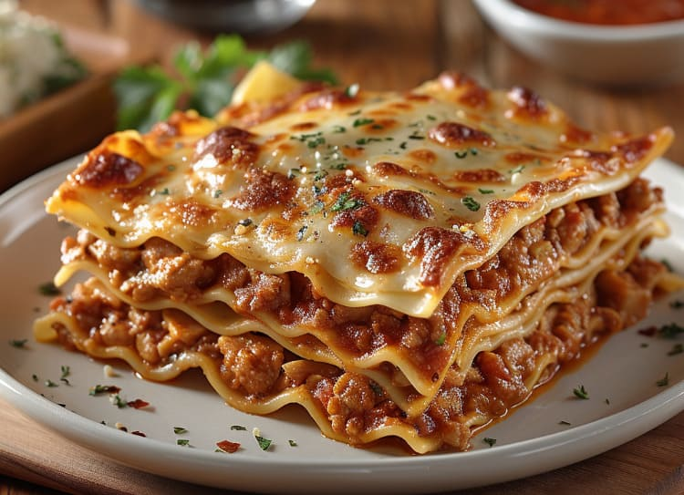

"Lasagna"

Lasagna is a classic Italian dish made with
layers of tender pasta sheets, a rich meat sauce,
creamy béchamel, and melted cheese. Each layer is
carefully stacked to create a savory, comforting meal
with a perfect balance of flavors and textures. Loved
worldwide, lasagna is the ultimate comfort food that’s
perfect for family dinners and special occasions alike.
Ingredients
- 1 pound lean ground beef
- 32 ounces cottage cheese
- 3 cups shredded mozzarella cheese, divides
- 2 eggs
- 1/2 cup grated parmesan cheese
- 2 teaspoons dried parsley
- sal to taste
- gorund black pepper to taste
- 9 lasagna noodles
- 1/2 cup water
Instructions
- Preheat oven to 375°F (190°C). Grease a 9x13-inch baking dish to prevent sticking.
- Cook ground beef in a large skillet over medium heat until browned, breaking it up with a spoon as it cooks. Drain any excess grease, then add the spaghetti sauce. Stir to combine and let simmer for a few minutes.
- Mix the cheeses: In a medium bowl, combine the cottage cheese, 2 cups of mozzarella, eggs, Parmesan cheese, and dried parsley. Season with salt and pepper to taste. Mix until smooth.
- Assemble the lasagna: Spread a thin layer of the meat sauce on the bottom of the prepared baking dish. Place 3 lasagna noodles over the sauce. Spread ⅓ of the cheese mixture over the noodles, followed by ⅓ of the remaining meat sauce. Repeat the layers twice more, finishing with the meat sauce on top.
- Add water: Carefully pour the ½ cup of water around the edges of the lasagna in the baking dish. This helps keep the lasagna moist as it bakes.
- Top with mozzarella: Sprinkle the remaining 1 cup of mozzarella cheese evenly over the top layer.
- Cover and bake: Cover the lasagna with foil and bake for 45 minutes. Then, remove the foil and bake for an additional 15 minutes, or until the cheese on top is melted and bubbly.
- Rest and serve: Let the lasagna sit for 10-15 minutes before cutting. This helps it set and makes serving easier.